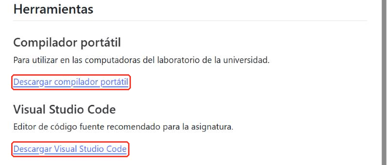
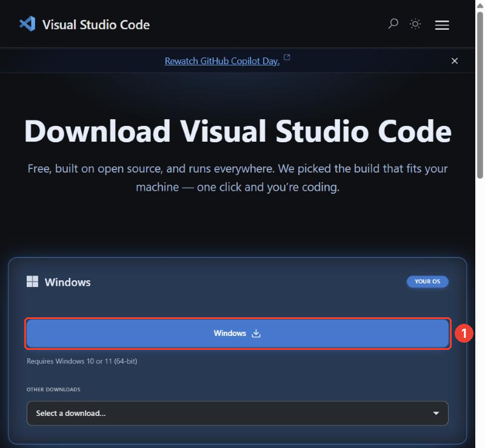
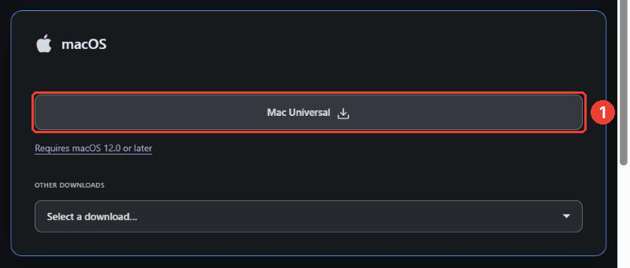
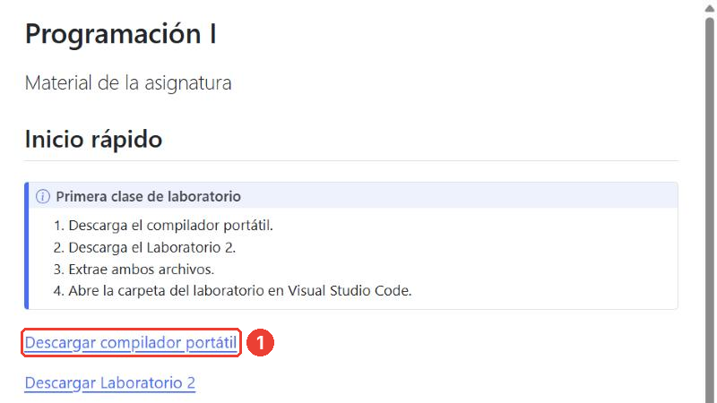
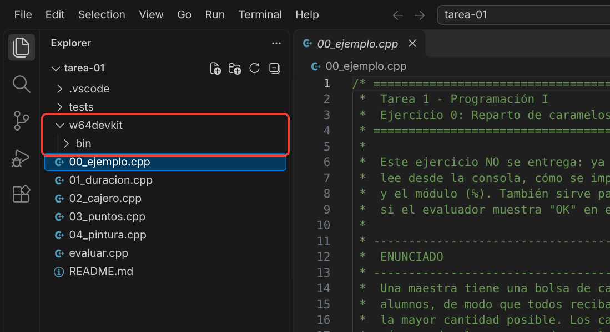
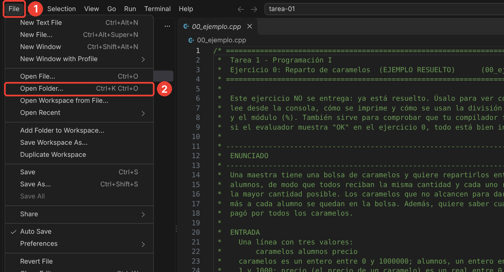
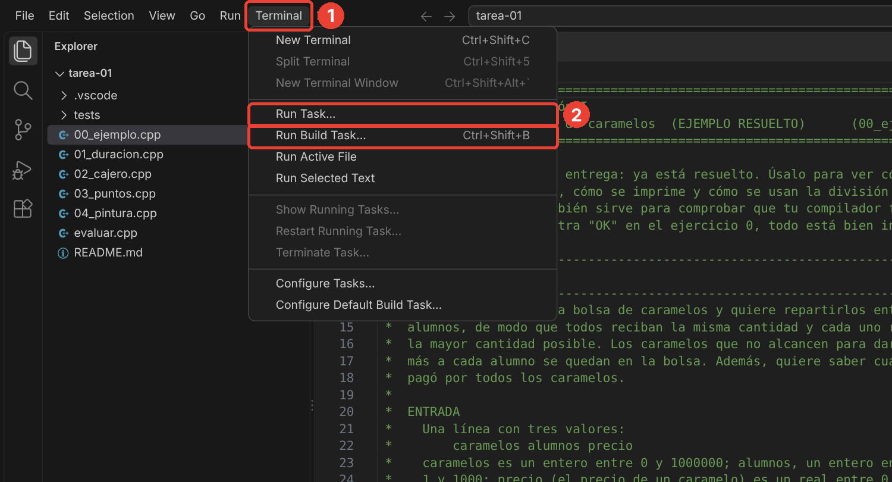
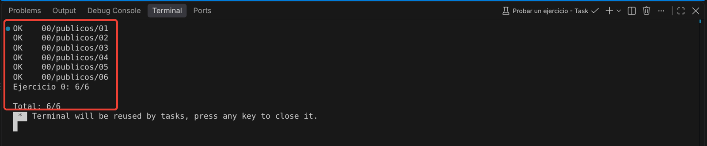

Guía de instalación — Programación I
Para hacer las tareas necesitas dos programas:
- Visual Studio Code (VS Code): el editor donde escribes el código.
- Un compilador de C++: el programa que convierte tu código en un programa que se puede ejecutar. En Windows usarás el compilador portátil w64devkit; en macOS, las herramientas de desarrollo de Apple.
Todo es gratuito y toma unos 15 minutos. Hazlo apenas recibas la tarea, no el día de la entrega: si algo falla, tendrás tiempo para preguntar.
Parte 1. Instalar Visual Studio Code
Entra a la página del curso, uru.tomassantana.com/p1, y baja hasta la sección Herramientas. Haz clic en Descargar Visual Studio Code. También puedes ir directamente a code.visualstudio.com/download.

En Windows
Paso 1. La página detecta tu sistema operativo y muestra primero el tuyo. En Windows, haz clic en el botón azul Windows. Se descarga un instalador llamado parecido a VSCodeUserSetup-x64-….exe.

Paso 2. Abre el archivo descargado (en la carpeta Descargas).
Paso 3. Acepta el acuerdo de licencia y pulsa Siguiente en cada pantalla. En Tareas adicionales, deja marcada la opción Agregar a PATH. Te conviene marcar también Agregar la acción “Abrir con Code” al menú contextual de directorio: así podrás abrir la carpeta de una tarea con clic derecho.
Paso 4. Pulsa Instalar y, al terminar, Finalizar.
En macOS
Paso 1. La página de descarga detecta tu sistema operativo y muestra primero el tuyo. En una Mac, el primer recuadro será macOS: haz clic en su botón Mac Universal, que funciona tanto en las Mac con procesador Intel como en las de Apple (M1, M2…). Se descarga un archivo .dmg.

La captura se tomó desde Windows, por eso el recuadro de macOS aparece como segunda opción y con el botón gris. En tu Mac estará arriba y con el botón azul, pero es el mismo botón.
Paso 2. Abre el archivo .dmg descargado (en la carpeta Descargas). Se abre una ventana con el ícono de Visual Studio Code.
Paso 3. Arrastra Visual Studio Code a la carpeta Aplicaciones.
Paso 4. Abre VS Code desde Aplicaciones con doble clic. Si macOS pregunta si quieres abrir una aplicación descargada de Internet, pulsa Abrir. Si VS Code pide acceso a tu calendario, contactos o fotos, pulsa No permitir: no lo necesita.
Si quieres tenerlo a mano, haz clic derecho (o Control + clic) en su ícono del Dock y elige Opciones > Mantener en el Dock.
Parte 2. Instalar el compilador
En Windows: compilador portátil (w64devkit)
El compilador portátil no se instala: es una carpeta que se coloca dentro de la carpeta de la tarea. VS Code ya está configurado para buscarlo ahí.
Paso 1. Descarga y descomprime la carpeta de la tarea, por ejemplo tarea-01.
Paso 2. En la página del curso, uru.tomassantana.com/p1, haz clic en Descargar compilador portátil. Se descarga el archivo w64devkit-x64-2.10.0.7z.exe.

Paso 3. Mueve ese archivo a la carpeta de la tarea, junto a README.md y los archivos .cpp.
Paso 4. Haz doble clic en el archivo. Es un archivo autoextraíble: se abre una pequeña ventana que pregunta dónde extraer. Deja la carpeta que propone (la de la tarea) y pulsa Extract.
Si Windows muestra el aviso “Windows protegió su PC”, pulsa Más información y luego Ejecutar de todas formas. Hazlo solo con el archivo descargado desde la página del curso.
Paso 5. Al terminar aparece una carpeta nueva llamada w64devkit. Ya puedes borrar el archivo .exe.
La carpeta de la tarea debe quedar así, con w64devkit al mismo nivel que los ejercicios y con la carpeta bin dentro de w64devkit:

Revisa que no haya quedado una carpeta dentro de otra, como w64devkit/w64devkit/bin: en ese caso, VS Code no encontrará el compilador.
Para las próximas tareas: cada tarea necesita su propia copia de w64devkit adentro. Copia la carpeta w64devkit de una tarea a la siguiente: no hace falta volver a descargarla.
En macOS: herramientas de desarrollo de Apple
Paso 1. Abre la aplicación Terminal: pulsa Cmd+Espacio, escribe Terminal y pulsa Enter.
Paso 2. Escribe el siguiente comando y pulsa Enter:
xcode-select --installPaso 3. Aparece una ventana que pregunta si quieres instalar las herramientas. Pulsa Instalar y acepta la licencia. La descarga puede tardar varios minutos.
Si la Terminal responde que las herramientas ya están instaladas (command line tools are already installed), no tienes que hacer nada más.
Paso 4. Cuando termine, comprueba la instalación escribiendo:
g++ --versionDebe aparecer un texto que empieza con Apple clang version. En macOS, g++ es otro nombre del compilador de Apple, y sirve igual para el curso.
Parte 3. Comprobar que todo funciona
Paso 1. Abre VS Code y ve a File > Open Folder… (Archivo > Abrir carpeta…). Elige la carpeta de la tarea (no un archivo suelto ni la carpeta Descargas completa).

Paso 2. Ve a Terminal > Run Task… (Terminal > Ejecutar tarea…), elige Probar un ejercicio y luego el 0.

Paso 3. En la terminal, en la parte de abajo, deberías ver OK en los seis casos y Total: 6/6. Si es así, todo está listo para empezar la tarea.

El README de cada tarea explica con más detalle cómo probar los ejercicios.
Problemas frecuentes
“No se encontró el compilador g++” (Windows). VS Code no encuentra la carpeta w64devkit. Revisa que:
w64devkitesté dentro de la carpeta de la tarea, y que dentro estébin(now64devkit/w64devkit/bin);- hayas abierto en VS Code la carpeta de la tarea, la que contiene
w64devkit,.vscodey los ejercicios.
“No se encontró el compilador g++” o “xcrun: error: invalid active developer path” (macOS). Las herramientas de Apple no están instaladas, o una actualización de macOS las desinstaló. Vuelve a ejecutar xcode-select --install.
No aparecen las tareas “Probar un ejercicio” ni “Probar todos los ejercicios”. Abriste un archivo suelto en lugar de la carpeta. Usa File > Open Folder… y elige la carpeta de la tarea.
No se ve la carpeta .vscode. Windows y macOS ocultan las carpetas cuyo nombre empieza con un punto, pero VS Code sí las muestra en el panel Explorer. Si no aparece ahí, la carpeta de la tarea no se descomprimió completa: vuelve a descomprimirla.